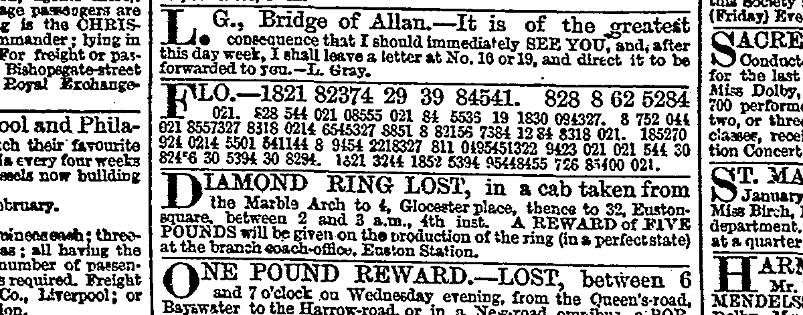
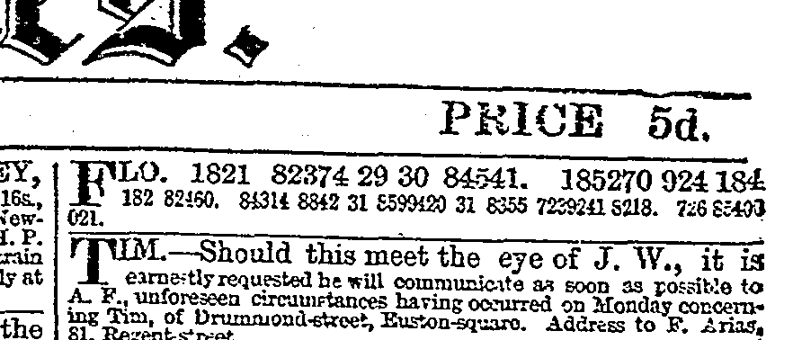
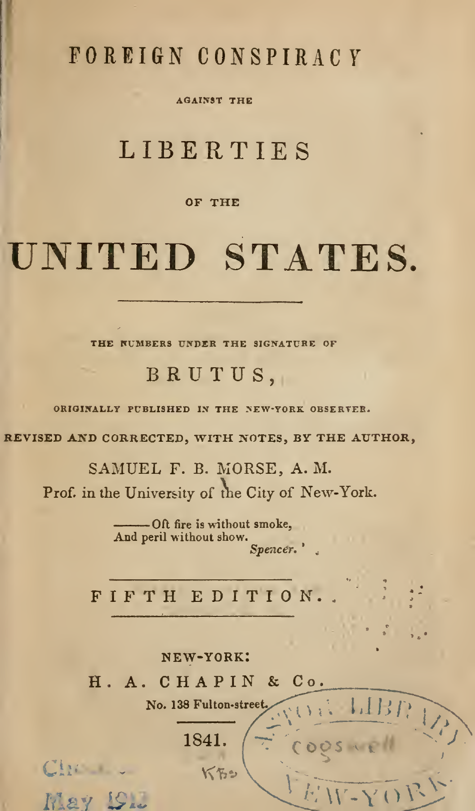
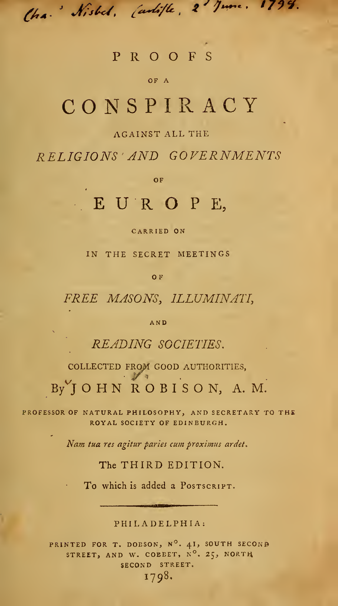
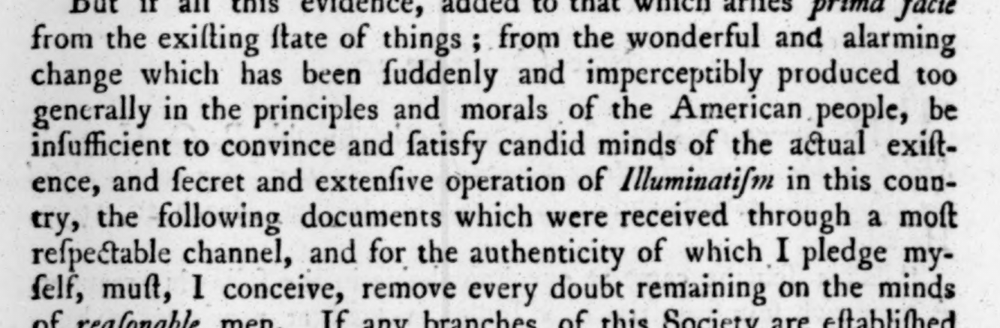
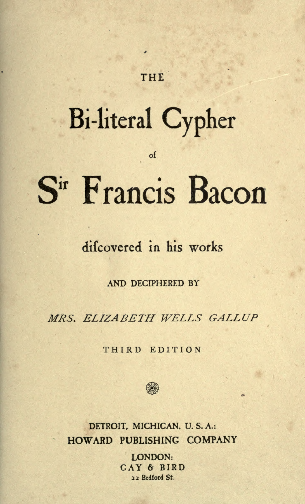
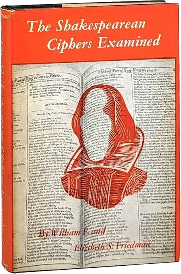

This realization of the poetry of London is not a small thing. A city is, properly speaking, more poetic even than a countryside, for while Nature is a chaos of unconscious forces, a city is a chaos of conscious ones. The crest of the flower or the pattern of the lichen may or may not be significant symbols. But there is no stone in the street and no brick in the wall that is not actually a deliberate symbol—a message from some man, as much as if it were a telegram or a post-card. The narrowest street possesses, in every crook and twist of its intention, the soul of the man who built it, perhaps long in his grave. Every brick has as human a hieroglyph as if it were a graven brick of Babylon; every slate on the roof is as educational a document as if it were a slate covered with addition and subtraction sums. (G. K. Chesterton)
Indeed, so deep still are the uncertainties surrounding the history of Shakspeare, that I sometimes wonder that the process applied by Strauss to the Life of our Saviour has not been extended to his. A Life of Shakspeare, on this worthy model, would be a capital exercise for some aspiring sprig of Straussism! (George Gilfillan)
It was a time when authors, who treated of a scientific politics and of a scientific ethics internally connected with it, naturally preferred this more philosophic, symbolic method of indicating their connection with their writings, which would limit the indication to those who could pierce within the veil of a philosophic symbolism. It was the time when the cipher, in which one could write ‘omnia per omnia,’ was in such request, and when ‘wheel ciphers’ and ‘doubles’ were thought not unworthy of philosophic notice…. It was a time when puns, and charades, and enigmas, and anagrams, and monograms, and ciphers, and puzzles, were not good for sport and child’s play merely; when they had need to be close; when they had need to be solvable, at least, only to those who should solve them. It was a time when all the latent capacities of the English language were put in requisition, and it was flashing and crackling, through all its lengths and breadths, with puns and quips, and conceits, and jokes, and satires, and inlined with philosophic secrets that opened down “into the bottom of a tomb”—that opened into the Tower—that opened on the scaffold and the block. (Delia Bacon, The Philosophy of the Plays of Shakspeare Unfolded, 1857)



You have a busy, a crafty, a powerful, a dangerous set of foreign leaders controlling and commanding a foreign population, ignorant and infatuated, intermixed with your own population, and who, at a single signal from the Pope, or from Metternich, when the cause of despotism shall require the deed, can spread disorder and riot through all your borders. (Samuel Morse, Foreign Conspiracy, 1935)
It is not visionary to suppose that it would not be long ere the whole surface of this country would be channelled for those nerves which are to diffuse, with the speed of thought, a knowledge of all that is occurring throughout the land (Samuel Morse, Letter, 1938)


I have pleased myself with a faint likeness between these poor philosophers and the Masters who handed down the thought of our race—the great Transmitters, who labored with their hands for scant bread, but preserved and enlarged for us the heritage of memory, and saved the soul of Israel alive as a seed among the tombs. (Eliot, Deronda)
Woe be to the son of man who says that the Tora (Pentateuch) contains common sayings and ordinary narratives. For if this were the case, we might in the present day compose a code of doctrine from profane writings which should excite greater respect. If the Law contains ordinary matter, then there are nobler sentiments in profane codes. Let us go and make a selection from them, and we shall be able to compile a far superior code. But every word of the law has a sublime sense and a heavenly mystery…. When it descended on earth, the Law had to put on an earthly garment to be understood by us, and the narratives are its garment. There are some who think that this garment is the real Law, and not the spirit which it clothed, but these have no portion in the world to come… (Ginsburg)
The design is to exhibit a system whereby the universe may be viewed methodically in connection with the truths given in the Bible, showing from the gradual & systematic development of the Creation, & from the harmony which prevails in all its parts that One God produced it & that he is over all. The alphabet is used as a key to mystical meanings, along with the numbers which it also stands for. (Eliot, Notebooks)
Your doubts lie as light as dust on my belief. I know the philosophies of this time and of other times: if I chose I could answer a summons before their tribunals. I could silence the beliefs which are the mother-tongue of my soul and speak with the rote-learned language of a system, that gives you the spelling of all things, sure of its alphabet covering them all. I could silence them: may not a man silence his awe or his love and take to finding reasons, which others demand? But if his love lies deeper than any reasons to be found? Man finds his pathways: at first they were foot-tracks, as those of the beast in the wilderness; now they are swift and invisible: his thought dives through the ocean, and his wishes thread the air: has he found all the pathways yet? What reaches him, stays with him, rules him: he must accept it, not knowing its pathway. (Eliot, Deronda)